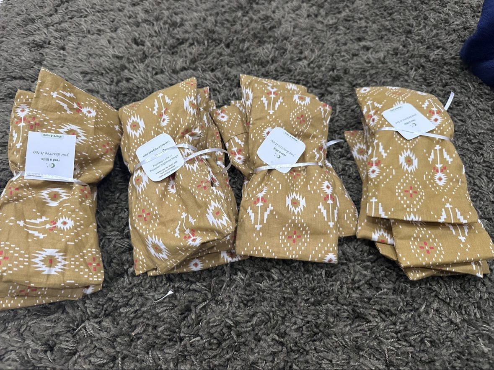

Two programs, one root system. Each runs its own site and volunteer crew — Kindroots is the trunk that holds them up.
Handmade comfort eye pillows for the people who care for others all day: cancer-care teams, hospice staff, and hospital nursing teams.
Each pillow is hand-sewn from soft cotton, filled with rice, and finished with our tag — care instructions on the back, our promise on the front: rest a little — you deserve it too.
Pillows are made in batches at volunteer filling events, where middle and high schoolers scoop, funnel, stitch, and tag together. No experience needed — just willing hands.
Deliveries go in person to clinical teams. Our first hospice delivery went to the clinical team at Hospice of the East Bay in Pleasant Hill on October 3, 2026.

Blankets, toys, and essentials for shelter animals — because every pet deserves comfort and care, whatever their circumstances.
This is where it all started. Finishing 8th grade, Siya began making blankets and toys for shelter animals — simple, washable, genuinely useful things that shelters always need.
Volunteers make every item by hand, and every item is logged before delivery to shelters and rescue organizations.
The program's voice has never changed: one blanket, one toy, and one wagging tail at a time.
We partner with cancer centers, hospices, hospital units, shelters, and rescues across the Bay Area.